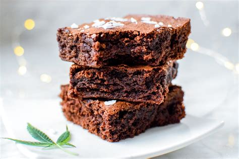

Home
CannaBrownies

Descrizione
È uno dei dolci più classici da realizzare con la cannabis, ed è proprio per questo che non passa mai di moda.
Oggi, vi diamo una semplice ricetta per il brownie alla marijuana, molto facile da fare e risponderemo ad
alcune delle domande più frequenti a riguardo.
Ingredienti
-
100 grammi di burro
-
4 uova
-
1 tazza di zucchero
-
Mezza tazza di farina
-
200 grammi di cioccolato da sciogliere
-
4 grammi di Annamaria
Passaggi
- Per prima cosa mettiamo il forno a preriscaldare a 120ºC (non ci costerà nulla fare l’impasto,
quindi l’ideale è che sia già tutto pronto per mettere il nostro composto appena finiamo di prepararlo).
- Successivamente, scalderemo una padella, alla quale aggiungeremo il burro e il cioccolato, che mescoleremo insieme a poco a poco.
- Mentre procedete, in una ciotola aggiungere le uova, lo zucchero, la farina e sbattere il tutto. Puoi farlo con una
forchetta o, sinceramente, la soluzione più semplice (anche se non, gastronomicamente parlando, la più professionale)
è usare il frullatore, così in mezzo secondo il tutto si impasta senza sgradevoli grumi.
- Infine aggiungete il cioccolato e la marijuana che dovrà essere ben triturata, quindi metti in forno. Per quanto? Dipende dalla pazienza.
A 120 gradi, in 60 minuti è pronta. Per scoprirlo non vi resta che aprire il forno quando è trascorso il tempo, bucherellando il brownie
con la punta del coltello: se esce pulito la torta è pronta.